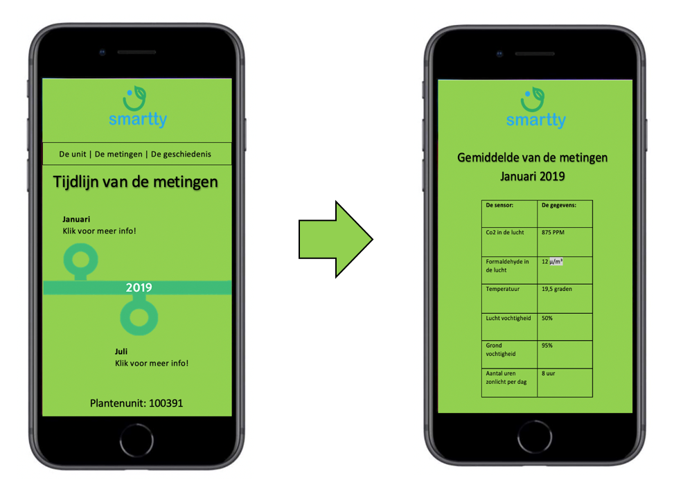
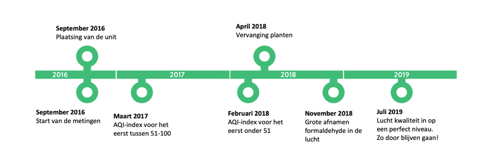

Prototype project
Het project is uitgevoerd voor de organisatie SMARTTY. Voor meer info over de projectorganisatie kunt u hier klikken.
Bij dit project diende er ook een prototype gemaakt te worden, van bijvoorbeeld de technologische ontwikkelingen die de projectorganisatie zou kunnen doorvoeren. Echter is de projectorganisatie nog erg in de opstartende fase en is begin december pas het prototype van de eerste plantenunit aangekomen bij de organisatie. Hierdoor konden wij zelf nog geen prototype maken van mogelijke (technologische) ontwikkelingen. Dit zorgde ervoor dat wij op zoek moesten naar een ander idee wat we konden tonen en wat een aanvulling zou kunnen zijn op het product van de organisatie.
Het idee wat wij hebben uitgewerkt, is die van het gebruik van een app. Deze app bestaat uit verschillende onderdelen en dient ook als dashboard, waarbij gegevens overzichtelijk bij elkaar staan. Zo zal de homepage van de app kunnen bestaan uit een afbeelding van de plantenunit, waarbij wordt aangegeven of de plantenunits nog voldoende water hebben. Mocht dit niet het geval zijn, dan zou dit aangevuld moeten worden. Hiervoor zou het weergeven van de locatie een goede aanvulling zijn, mochten er in een gebouw bijvoorbeeld meer plantenwanden of plantenunits bevinden. Dan is via deze methode makkelijk te zien in welke kamer men moet wezen.
Vervolgens zou er een scherm kunnen komen waarop het CO2 gehalte wordt aangegeven of dat de luchtvochtigheid wordt beschreven. Bij klikken op de afbeelding zal deze vergroten voor meer duidelijkheid.
Als aanvulling zou er ook nog gekeken kunnen worden naar de geschiedenis van de plantenwand of plantenunit. Hierbij kan een tijdlijn getoond worden, waarbij de gemiddelde metingen per maand worden gegeven. Dit zal voor informatie zorgen waar de organisatie op in kan spelen, om het product waar nodig te verbeteren.
 
De app is echter nog niet gemaakt en dit is slechts een idee. De cijfers en gegevens op de afbeeldingen zijn puur fictief. Ook is in de eerste afbeelding een schets van de plantenunit geblurred, om zo geen gevoelige informatie te verspreiden. Dit zal wel allemaal duidelijk staan in het adviesrapport, wat naar de opdrachtgevende organisatie is gestuurd. Dit adviesrapport zal ook voldoen aan de competentie: "Het vertalen van een praktijkcasus naar een onderzoeksplan, welke uitgevoerd wordt en waarvan de kwaliteit wordt geëvalueerd". Echter kan dit rapport wegens privacyredenen niet in dit portfolio gedeeld worden.
Ga terug naar 'Smart Start' Ga terug naar vorige pagina